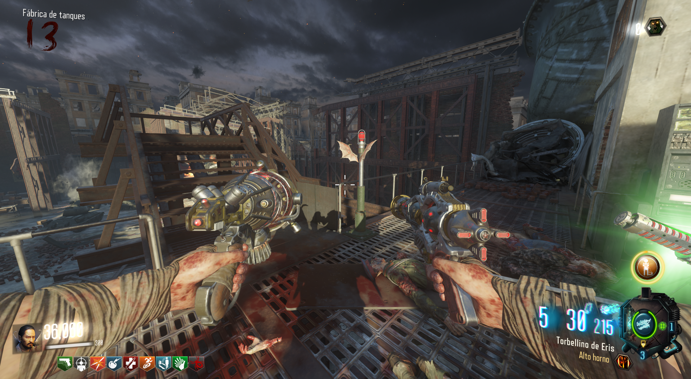
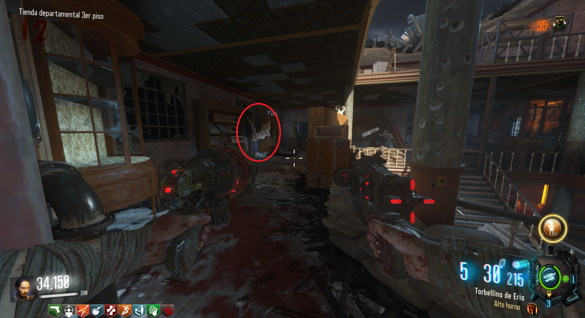
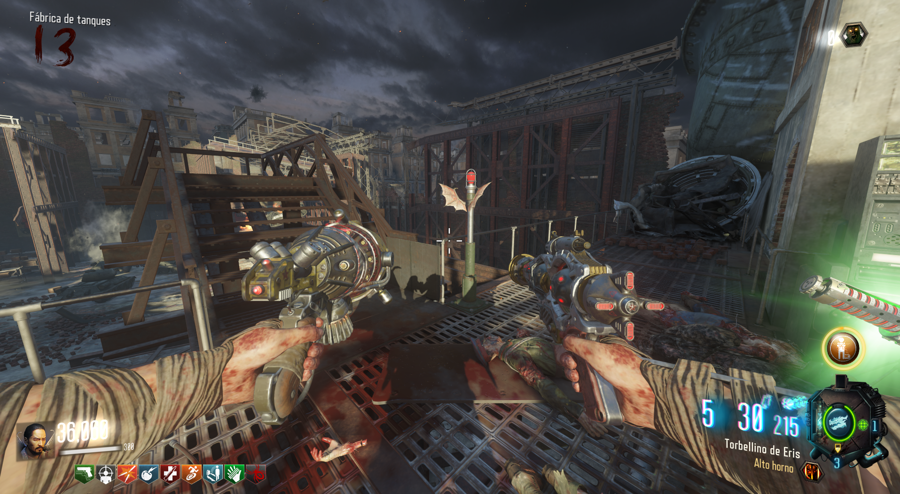
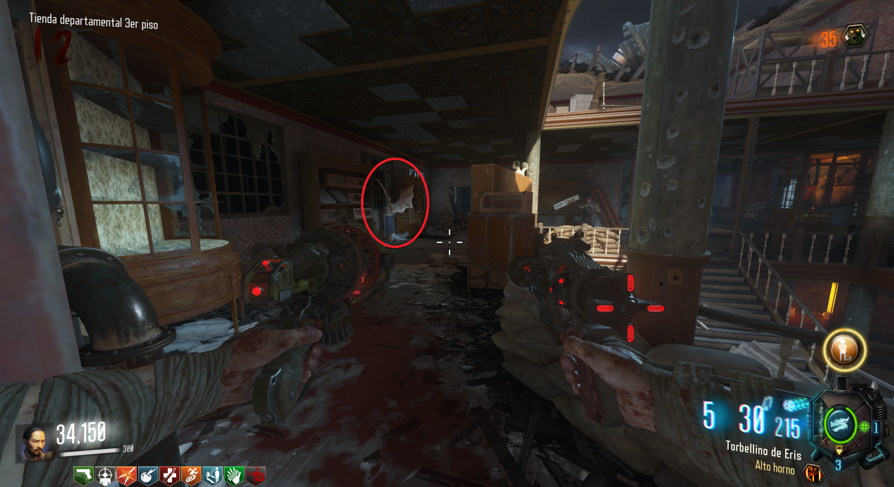

Alas de Dragón (Gorod Krovi)

Requisitos: Tener el guantelete de Siegfried.
Con las alas, aparte de tener resistencia al fuego, podremos viajar al PaP sin costo y sin la cinemática del dragón. Solo tendremos que teletransportarnos en esto aparatos con alas.

Tendremos que volar al PaP desde cada una de las plataformas donde se puede llamar al dragón.
Después iremos a la última planta del Department Store para obtener las alas.

Con las alas, aparte de tener resistencia al fuego, podremos viajar al PaP sin costo y sin la cinemática del dragón. Solo tendremos que teletransportarnos en esto aparatos con alas.

Tendremos que volar al PaP desde cada una de las plataformas donde se puede llamar al dragón.
Después iremos a la última planta del Department Store para obtener las alas.
